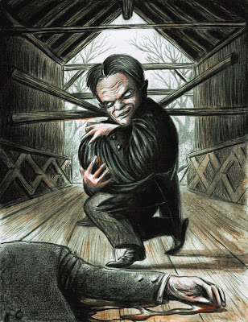
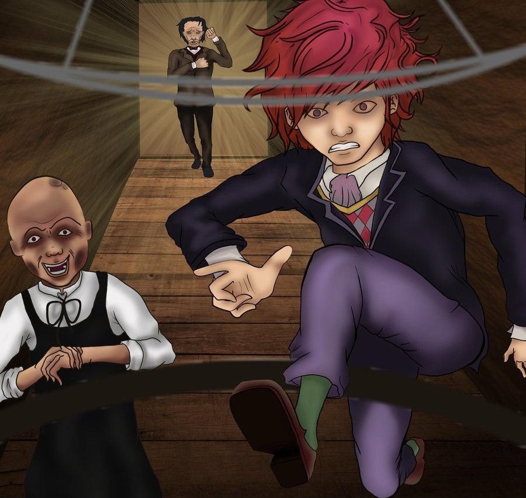

|  |  |
Nunca apuestes tu cabeza al diablo es una narraci ón de la época de plena madurez de su autor, y por tanto de algún modo reveladora de su carácter y opiniones. Como en otros cuentos de la serie humorística, sardónica o grotesca este relato comenta satírica y tendenciosamente alguna realidad o circunstancia de su tiempo que desagradaba especialmente a su autor.
"... La ruina que había vaticinado a Toby Dammit se cumplió, por fin, a causa de la poco caballeresca práctica mencionada en último término. Aquella costumbre «creció con su crecimiento y se esforzó con sus fuerzas», de modo que, cuando Toby llegó a ser hombre, apenas podía pronunciar una frase sin aderezarla con una promesa de juego. Y no apostaba en firme… nada de eso. Seré justo con mi amigo y diré que antes hubiera preferido hacerse monje. En su caso, aquello era una simple fórmula, y nada más. Sus expresiones no tenían el menor sentido positivo. Eran desahogos, simplemente —ya que no puedo decir que lo fueran inocentemente—; frases imaginativas con las cuales redondeaba sus declaraciones. Cuando decía: «Le apuesto esto y aquello», a nadie se le ocurría formalizar la apuesta, pero de todos modos yo no podía dejar de considerar que mi deber era reprenderlo. Aquella costumbre era inmoral, y así se lo decía. Era vulgar, y le rogaba que me creyera. Era desaprobada por la sociedad, y nadie me desmentiría por decirlo. Estaba prohibida por una ley del Congreso, y afirmándolo así no incurría en ninguna mentira. Le hacía reproches, sin resultado; aducía pruebas, vanamente. Si lo amenaza, se sonreía; si le suplicaba, prorrumpía en carcajadas. Si rogaba, se encogía desdeñosamente de hombros. Si lo amenazaba… se ponía a jurar. Si le daba de puntapiés… llamaba a la policía. Si le tironeaba de la nariz, se sonaba y apostaba su cabeza al diablo a que no me atrevería a repetir el experimento...leer más"